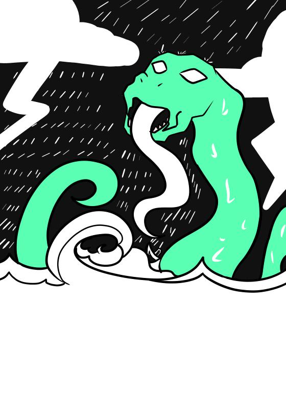

Boiúna
A Boiúna (ou Boiaçu), também conhecida como Cobra Grande, é uma entidade folclórica amazônica, uma serpente colossal com olhos luminosos que habita rios profundos e que é capaz de causar tempestades, virar embarcações e até assumir a forma de uma mulher. Seu nome deriva do tupi mbóiuna.
Existem diversas versões da lenda, sendo um exemplo a de Belém do Pará, na qual é contada que a Boiúna repousa debaixo da cidade, com sua cabeça na Catedral da Sé e seu corpo alcançando até a Basílica de Nazaré. Reza a lenda que, caso a cobra desperte, Belém afundaria nas águas do rio.